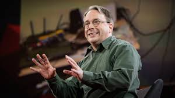

Linus Torvalds
Software is like sex: it's better when it's free-Linus Torvalds

Named by Time magazine as the ‘one of the most influential people in the world’, Linus Torvalds is the creative genius behind the Linux kernel operating system
Early Life
- Between 1988 and 1996, he studied at the University of Helsinki, from where he obtained a master’s degree in computer science. research group.He wrote his Master’s thesis on ‘Linux: A Portable Operating System'. He became fascinated and deeply interested in computer science after he worked on the 8-bit home computer, VIC-20
- He later bought the personal computer, Sinclair QL and modified the computer, especially the operating system. He programmed assembly language, text editor and a few games.
Profesional Life
- In 1991, he purchased the Intel 80386-based IBM PC and obtained a MINIX operating system. With this, he began to work and research on the Linux operating system.
- From 1997 to 1999, he worked on the '86open' project, which is a binary file format for the ‘Unix’ and Unix-like operating systems. They were to be used on a common x86 PC.
- In 1999, he was offered stock options for his creation by the companies, Red Hat and VA Linux. That very year, the stock prices increased to about $20 million after the companies went public.
- In 2012, he stated that his contribution to the Linux kernel mostly involved merging codes that were already written by others and did not involve much programming.